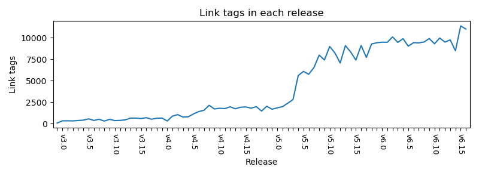

A policy for Link tags
Certain source-code management systems are able to track a change through multiple versions by assigning a "change ID" to the work. Git does not do that, though, so the kernel community does not have an easy way to look at the history of a patch. In a discussion prior to the 2019 Kernel Summit, Shuah Kahn asked whether the community should adopt some sort of change-ID convention to track work heading into the kernel. Doug Anderson proposed something similar a month later. The extended discussions that followed did not lead to the adoption of a change ID, but they did bring about a related change.
Specifically, Thomas Gleixner suggested the use of a Link tag that would contain an archive URL for the posting of each commit on the mailing lists:
What's really useful is when the commit has a Link tag:https://lore.kernel.org/lkml/$MESSAGE-IDand if the submitters provide the same kind of link in their V(N) submission pointing to the V(N-1) in the cover letter:
https://lore.kernel.org/lkml/$MESSAGE-ID-V(N-1)If it's a single patch the link can be in the patch itself after the --- separator. That allows a quick lookup of the history.
The Link tag was not new; its first appearance in the kernel repository is in this 2011 commit. That commit, along with 56 others containing Link tags, went into the 2.6.39 release. This tag was mostly used for commits to the x86 and core-kernel subsystems initially, showing up in 3-500 commits per release. As this plot shows, the use of Link tags grew slowly over time, until something happened:

The "something" that happened partway through the 5.2 development cycle was, of course, the above-mentioned discussion. There seemed to be widespread agreement that the addition of Link tags to commits would be helpful. Kees Cook posted a Git hook configuration that would add the tag automatically whenever a patch was applied with git am. Linus Walleij updated the kernel documentation to suggest using this hook; the b4 tool later gained a flag to add Link tags as well. The addition of Link tags grew accordingly; in the 6.16 release, 11,030 commits (75% of the total) included Link tags.
(It is worth noting that the other part of Gleixner's suggestion — including a link to the previous posting whenever a patch series is updated — has not been adopted as widely, though many developers do indeed include those links. These backward links are important, as any LWN kernel writer will attest, if one wishes to look at the history of a change through multiple iterations.)
During the 2019 discussion, Torvalds was lukewarm to the idea of including Link tags; he certainly did not oppose it, and said it was better than trying to create some sort of change ID. By 2022, though, he was beginning to complain about them:
I _really_ wish the -tip tree had more links to the actual problem reports and explanations, rather than links to the patch submission.One has the actual issue. The other just has the information that is already in the commit, and the "Link:" adds almost no actual value.
This refrain would become more common over the years, culminating in some strongly worded complaints in the middle of discussions on virtual filesystem layer and io_uring patch sets. The core problem remained the same: he does not like it if he follows the URL in a Link tag, hoping to learn more about the change in question, and only finds the same information that is already contained in the changelog itself. That slows his workflow down and increases his grumpiness level.
Various developers have sought to defend the use of these tags in these
discussions. Christian Brauner said:
"I care that I can git log at mainline and figure out where that patch
was discussed, pull down the discussion via b4 or other tooling, without
having to search lore
". Konstantin Ryabitsev pointed out
that it is not always easy to find patch submissions by searching the
archives. Jens Axboe said that
the tags can help to find the cover letter for a patch series, and that
they can also help to turn up discussion that happens after a patch is
applied. Greg Kroah-Hartman argued for
keeping the tags, saying "they work well for those that have to spelunk
into our git branches all the time
".
Torvalds, though, has been unmoved by these arguments and steadfastly opposed to the use of Link tags except in cases where there is something "interesting" behind the link. In the recent discussions, Axboe asked repeatedly for a proclamation from Torvalds on what the rules for Link tags should actually be (and suggested summoning LWN for a summary). Torvalds appears to have answered that request in the notes for the 6.17-rc5 release:
So if a link doesn't have any extra relevant information in it, just don't add it at all in some misguided hope that tomorrow it will be useful.Make "Link:" tags be something to celebrate, not something to curse because they are worthless and waste peoples time.
Please?
Many maintainers are unlikely to celebrate the fact that they have to end
the automatic addition of Link tags and think, for each commit, whether
such a tag is "interesting" or not. But they can celebrate the fact that
the time spent on that exercise will save some time responding to grumpy
emails from the Chief Penguin. While the new policy may not be entirely
popular among maintainers, there is at least now something approaching an
actual policy around the use of these tags.
| Index entries for this article | |
|---|---|
| Kernel | Development model/Patch management |
Posted Sep 11, 2025 16:00 UTC (Thu)
by kleptog (subscriber, #1183)
[Link] (1 responses)
The kernel got a de-facto ChangeId, people start building their workflows around it and now they have to stop because Linus personally doesn't see the value of ChangeIds.
ChangeIds at least have the benefit of not pretending to be anything other than a random string. In that sense they're better than Link tags.
Posted Sep 12, 2025 6:26 UTC (Fri)
by alx.manpages (subscriber, #145117)
[Link]
Posted Sep 11, 2025 16:07 UTC (Thu)
by masneyb (subscriber, #7413)
[Link] (6 responses)
Posted Sep 11, 2025 23:03 UTC (Thu)
by sam_c (subscriber, #139836)
[Link] (2 responses)
Posted Sep 11, 2025 23:03 UTC (Thu)
by sam_c (subscriber, #139836)
[Link]
Posted Sep 13, 2025 11:33 UTC (Sat)
by pbonzini (subscriber, #60935)
[Link]
Or for a less positive example, since the stable maintainers are pretty AI-happy and their tools don't (or didn't until recently) try to backport a whole series, that's the first thing to check if a regression is reported on a stable release.
Posted Sep 12, 2025 9:41 UTC (Fri)
by pbonzini (subscriber, #60935)
[Link] (2 responses)
Posted Sep 13, 2025 8:35 UTC (Sat)
by tiwai (subscriber, #39450)
[Link] (1 responses)
I thought (hoped) that using https://patch.msgid.link/... instead of https://lore.kernel.org/... were clear enough to identify that it's a patch submission link, but Linus didn't like this much, either, unfortunately.
Posted Sep 13, 2025 10:54 UTC (Sat)
by pbonzini (subscriber, #60935)
[Link]
People have been adding lore links because they find them useful. If Linus doesn't like that Link is used that way, those same people will need another way to embed the same information, and the best way to do so is the one that git has provided for about 10 years (in fact I contributed it ;)).
Posted Sep 11, 2025 16:30 UTC (Thu)
by tux3 (subscriber, #101245)
[Link]
I can see how it would be disappointing to follow links that are almost always automated, expecting them not to be. I think my brain is wired in such a way that I would learn not to do that, and judge a patch only on its human content. If it has to be rejected because a meaningful link was cleverly hidden inside metadata, perhaps the submitter would also learn to make it more prominent next submission.
Posted Sep 11, 2025 17:30 UTC (Thu)
by epa (subscriber, #39769)
[Link]
Posted Sep 11, 2025 21:52 UTC (Thu)
by quotemstr (subscriber, #45331)
[Link] (11 responses)
Posted Sep 12, 2025 3:17 UTC (Fri)
by wtarreau (subscriber, #51152)
[Link] (9 responses)
Regarding the link tag, the problem here is that it has two different use cases: one that links to a patch submission possibly with no discussion, and another which is to point to a discussion. When it's automated, you never know if you'll find a discussion there and often it's not. So in fact there should be a different tag (if at all) to explicitly designate a discussion. What's annoying with generic tags is that there's no wording around to indicate what to hope from there. When it's written "Based on the discussion at https://..." it's clear what to expect. But "link:" (especially automated) can be anything.
Also I generally dislike having to copy-paste links to get more information. While it's claimed that lore will exist forever, it will change every 20 years like anything else. I'm seeing some projects on github with no commit message except "addresses issue #1234". The day the project moves or the account is blocked, they lose all history! I find it very important to indicate in the commit message what was attempted to be done, why and why other options were not kept. The links should only be for the details of the discussion.
Posted Sep 12, 2025 3:33 UTC (Fri)
by ebiederm (subscriber, #35028)
[Link] (8 responses)
For the link tags it doesn't really matter. They embed the emails unique identifier. An identifier scheme that dates back to nntp. So as long as someone has an appropriately indexed set of emails it will be possible to find the email the link tag refers to.
Posted Sep 12, 2025 12:38 UTC (Fri)
by daroc (editor, #160859)
[Link] (7 responses)
https://lore.kernel.org/bpf/CACYkzJ6VQUExfyt0=-FmXz46GHJh...
->
s,lore.kernel.org,lwn.net/ml,
->
https://lwn.net/ml/bpf/CACYkzJ6VQUExfyt0=-FmXz46GHJh3d=FX...
Posted Sep 13, 2025 7:57 UTC (Sat)
by wtarreau (subscriber, #51152)
[Link] (5 responses)
Posted Sep 14, 2025 4:13 UTC (Sun)
by ebiederm (subscriber, #35028)
[Link] (4 responses)
I do agree none of that justifies not putting all of the relevant information in commit mesages.
That said I would really like to see the link tag to the submission email, in addition to links to v1, v2, v3,v4 etc.
I have done way too much code archeolgy in the pre git archives and it is near impossible to find the patch submissions, let alone the conversation that led to the code. So several times despite finding the committs I have been reduced to guessing, to know why a change was made.
Most recently I fixed a regression that came in linux-2.4.0-test12, to setuid executables. Someone had refactored the code at the last minute, moved the code from fs/exec to security/commoncap and introduced a function is_setuid that was bizarre. It tested the uid and suid in the new cred to see if they matched, completely ignoring the old cred, and the possibility of an code with a misnatched uid and suid calling exec on a suid executable. At the end of the day idea if testing for setuid execution was wrong at that spot. My fix was to restore the behavior prior to linux-2.4.0-test12. This regression was found because it worked fine on other unices. That fix didn't get merged until sometime this year.
For things like that the submission emails would at least allow knowing if a change is part of a series, and give hints on where to look for the rest of the discussion. Something to go on.
With the slowly growing complexity of the core kernel my sense is that small slip ups like that are on rise as a percentage of patches in the kernel. Which is very unfortunate because I ran out of time before I could finish fixing everything I know about that came in prior to 2.6.0 being released, and I have seen some merged in more recent kernels.
So for the people who have to fix the corners cases no one thought would matter, but that turn out they do matter. Let's please include as much information as we easily and accurately can in the commit record. Let's give the poor souls who have to fix the bugs a chance.
Posted Sep 14, 2025 14:35 UTC (Sun)
by stevie-oh (subscriber, #130795)
[Link] (1 responses)
Posted Sep 14, 2025 19:14 UTC (Sun)
by ebiederm (subscriber, #35028)
[Link]
Take a look at the git history if you want the details.
It failed safe, as in fewer permissions than then caller should have. And it is dealing with cases that practically never happen. So I don't think there was anything exploitable about it.
But it was doing the wrong thing for the wrong reason.
Posted Sep 15, 2025 3:54 UTC (Mon)
by wtarreau (subscriber, #51152)
[Link] (1 responses)
IMHO the part related to the patch submission is usually useless (just results in ack-by, reviewed-by and that's all). There's rarely even any info beyond what's already present in the commit messages themselves. However, *discussions* are useful, and I agree they can continue past a submission. But if a discussion just starts after a submission, usually it'll lead to a new series, and if it happens past a merge, it will lead to a fix, which can be linked to.
I used to visit links when they were about discussion, nowadays I don't anymore because I rarely hope to find anything but a list of ack-by/reviewed-by. That's why I think that a single tag for two purposes is what introduces the noise in the first place and degrades the value of the link tag; Indeed a submitted-at tag could help by keeping link dedicated to real discussion(s) or even papers (e.g. when implementing an algorithm or fixing a vulnerability described in a public report).
Posted Sep 22, 2025 2:56 UTC (Mon)
by SLi (subscriber, #53131)
[Link]
If anything, when later investigating changes, it's useful to see what was considered, what other approaches someone would have wanted taken and why, etc.
A commit message should still sell the patch, not explain an entire complicated discussion about a topic together with objections.
Posted Sep 15, 2025 16:37 UTC (Mon)
by paulj (subscriber, #341)
[Link]
Posted Sep 12, 2025 13:02 UTC (Fri)
by vegard (subscriber, #52330)
[Link]
Here is an example where a lore link was added after the fact through patch ID or subject matching: https://git.kernel.org/vegard/c/dcb23e1878013
Posted Sep 12, 2025 3:35 UTC (Fri)
by sjpark (subscriber, #87716)
[Link]
> When bugs happen, people don't go to the original emailed patch
So I can understand Linus' frustration, but ...
I personally do report on the original emailed patch, and the lore link on git commit is very helpful. As a result I can get whole related discussions (or links to related discussions) from the original thread, without searching more. I'm wondering if we can encourage people to report bugs or whatever on the original emailed patch, or at least add relevant after-posting discussions on the original patch mail thread, to make the lore links on git commits more useful enough to convince Linus sometime in future.
Posted Sep 12, 2025 8:59 UTC (Fri)
by mzyngier (subscriber, #32898)
[Link]
The merge commit contains a description of the series, and I plan to add a link back to the ML as part of this commit message. At least, it indicates where the series has been lifted from, and still allows people to easily find the thread and respond to it (to report a bug, for example...).
I hope this is an acceptable middle ground between spraying Link: tags on all commits and the total absence of provenance information.
Posted Sep 14, 2025 18:46 UTC (Sun)
by nevets (subscriber, #11875)
[Link] (1 responses)
The other useful case of link tags with no discussion is when I run my tests and the test fails on somebody else's commit. I do a bisect, and hope the commit has a link tag to the patch. If it does, I go to lore, download the mbox from it, and reply to that patch with the bug report. Guess what? That useless link is no longer useless. It now has a discussion to why that commit broke
Posted Sep 14, 2025 20:16 UTC (Sun)
by pbonzini (subscriber, #60935)
[Link]
Please don't, it's information that is very useful and people were adding it because it is. Whether it's a link or message-id trailer I don't care, but it should be there *somewhere*. Linus doesn't do backports...
Posted Sep 15, 2025 22:11 UTC (Mon)
by marcH (subscriber, #57642)
[Link] (1 responses)
But it wasn't suited to the boss, so it just goes away without any replacement? No Change-ID, no new tag, none of the various alternatives that have been offered? Did I miss anything?
If that did not break some "userspace" then I don't know what does.
This also feeds perfectly the narrative that the kernel review process is authoritative, arbitrary and broken.
Linux and git were heavily based on "prior art": 1. Look at everything that already exists; 2. Outclass it. But as far as "forges" as concerned, the kernel "power(s)" seems to assume that all prior art is automatically bad; despite forges being used by pretty much the entire rest of the world... The current algorithm seems to be "IF has(web interface) OR has(database) THEN bad! Ignore it _all_". This is genuinely sad.
PS: thanks for the stellar summary. At least something good in that space; too bad it's only the reporting.
Posted Sep 15, 2025 22:18 UTC (Mon)
by marcH (subscriber, #57642)
[Link]
So let's take for example cases where the most "interesting" discussion (for some subjective definition of "interesting) happened in the vN-1 or vN-2 submission. That sounds pretty common. Should/can submitters manually add some "Link: v(N-1)" then?
Have answers to questions like this one been submitted as patches to https://docs.kernel.org/process/submitting-patches.html yet? That sounds like a minimum before changing the existing practice.
I'm replying to myself in a different LWN comment because this is a different topic. This question here is about "interesting" links as opposed to "not interesting" links (where the only "interest" that matters is the boss')
Posted Nov 13, 2025 17:44 UTC (Thu)
by andrejp (guest, #47396)
[Link]
Wasting people's time?
git-am(1) has --message-id
$ MANWIDTH=72 man git-am | sed -n '/--message-id/,/^$/p'
-m, --message-id
Pass the -m flag to git mailinfo (see git-mailinfo(1)), so
that the Message-ID header is added to the commit message.
The am.messageid configuration variable can be used to
specify the default behaviour.
I've been using this, which keeps the useful information, without adding a link (which might break, and waste people's time).
How about a new field to link to lore?
How about a new field to link to lore?
How about a new field to link to lore?
How about a new field to link to lore?
How about a new field to link to lore?
How about a new field to link to lore?
How about a new field to link to lore?
Multiplexed fields
If there is such a thing as links to extra relevant information that the maintainer is likely to want to read, couldn't they rather be in the patch itself, where most of the other information intended for human consumption is?
Two tags needed
git hidden by default notes
git hidden by default notes
git hidden by default notes
git hidden by default notes
s,/#t,,
git hidden by default notes
git hidden by default notes
git hidden by default notes
git hidden by default notes
git hidden by default notes
git hidden by default notes
git hidden by default notes
git hidden by default notes
Can we encourage people to make lore links on git commits more useful?
> to talk about them.
Link in merge commits
All or nothing
All or nothing
No alternative, really?
Link: vN-1 ?
Just a silly little idea